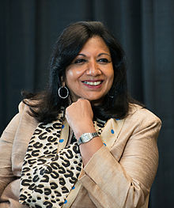

Kiran Mazumdar was born to Gujarati parents in Bangalore, India.She went to school at Bangalore’s Bishop Cotton Girl's High School, graduating in 1968. She then attended Mount Carmel College, Bangalore, a women's college offering pre-university courses as an affiliate of Bangalore University. She studied biology and zoology, graduating from Bangalore University with a B.Sc. in Zoology in 1973.Mazumdar hoped to go to medical school, but did not obtain a scholarship.
Her father, Rasendra Mazumdar, was the head brewmaster at United Breweries. He suggested that Kiran study fermentation science, and train to be a brewmaster, a very nontraditional field for a woman.Mazumdar went to Federation University (Formerly known as University of Ballarat) in Australia to study Malting and Brewing. In 1974 she was the only woman enrolled in the brewing course, and the top of her class.She earned the degree of Master Brewer in 1975.
She worked as a trainee brewer in Carlton and United Breweries, Melbourne and as a trainee maltster at Barrett Brothers and Burston, Australia. She also worked for some time as a technical consultant at Jupiter Breweries Limited, Calcutta and as a technical manager at Standard Maltings Corporation, Baroda between 1975 and 1977.However, when she investigated the possibility of further work in Bangalore or Delhi, she was told that she would not be hired as a master brewer in India because "It's a man's work."She began to look abroad, and was offered a position in Scotland.Before Kiran could move, she met Leslie Auchincloss, founder of Biocon Biochemicals Limited, of Cork, Ireland. Auchincloss's company produced enzymes for use in the brewing, food-packaging and textile industries. Auchincloss was looking for an Indian entrepreneur to help establish an Indian subsidiary. Mazumdar agreed to undertake the job on the condition that if she did not wish to continue after six months she would be guaranteed a brewmaster's position comparable to the one she was giving up.
After a brief period as a Trainee Manager at Biocon Biochemicals Limited, of Cork, Ireland, to learn more about the business, Kiran Mazumdar Shaw returned to India. She started Biocon India in 1978 in the garage of her rented house in Bengaluru with a seed capital of Rs. 10,000. Although it was a joint venture, Indian laws restricted foreign ownership to 30% of the company. The remaining 70% belonged to Kiran Mazumdar Shaw.
Initially, she faced credibility challenges because of her youth, gender and her untested business model. Funding was a problem: no bank wanted to lend to her, and some requested that her father be a guarantor. A chance meeting with a banker at a social event finally enabled her to get her first financial backing. She also found it difficult to recruit people to work for her start-up. Her first employee was a retired garage mechanic. Her first factory was in a nearby 3,000-square-foot shed. The most complicated piece of equipment in her lab at that time was a spectrophotometer.As well, she faced the technological challenges associated with trying to build a biotech business in a country with a shaky infrastructure.Uninterrupted power, superior quality water, sterile labs, imported research equipment, and workers with advanced scientific skills were not easily available in India at the time.
The company's initial projects were the extraction of papain (an enzyme from papaya used to tenderize meat) and isinglass (obtained from tropical catfish and used to clarify beer).Within a year of its inception, Biocon India was able to manufacture enzymes and to export them to the United States and Europe, the first Indian company to do so. At the end of her first year, Kiran Mazumdar Shaw used her earnings to buy a 20-acre property, dreaming of future expansion.